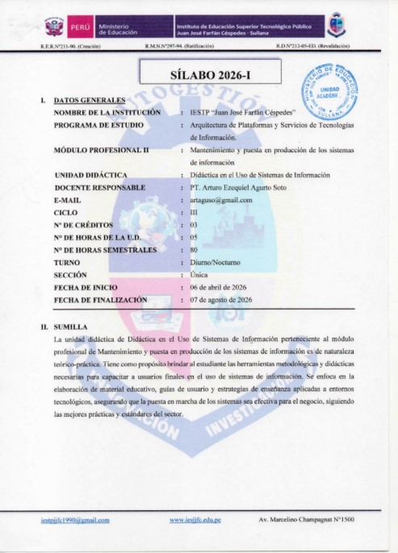
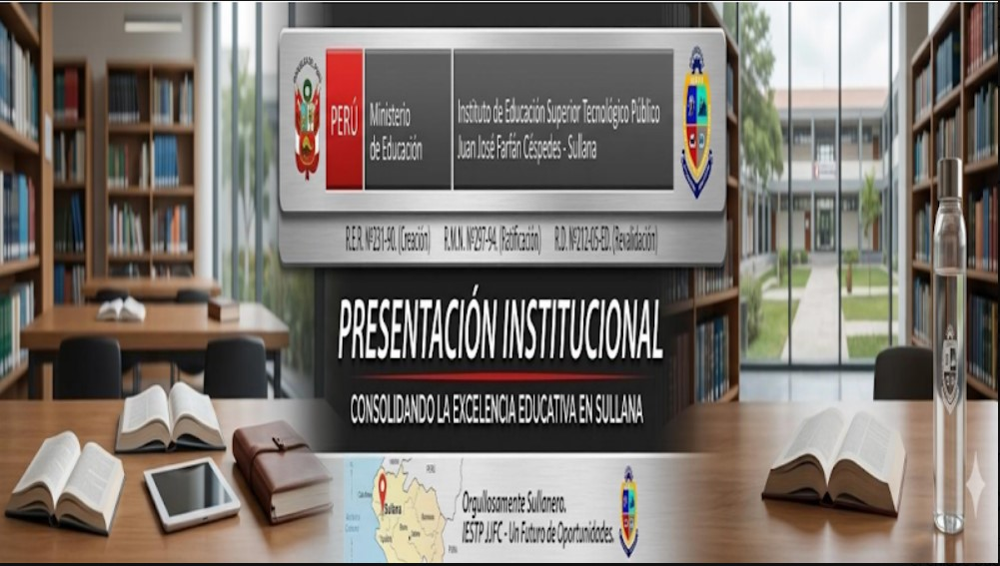
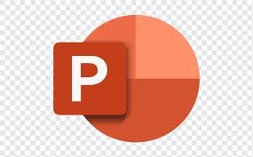

PORTAFOLIO DEL CURSO
DIDÁCTICA EN EL USO DE SISTEMAS DE INFORMACIÓN
Alumno: Rodolfo Cruzado
Ciclo: III
Carrera: Arquitectura de Plataformas y Servicios de TI
Institución: IESTP Juan José Farfán Céspedes
Alumno: Rodolfo Cruzado
Ciclo: III
Carrera: Arquitectura de Plataformas y Servicios de TI
Institución: IESTP Juan José Farfán Céspedes
El presente portafolio académico muestra las actividades, trabajos y evidencias desarrolladas durante el curso Didáctica en el Uso de Sistemas de Información. Se presentan documentos elaborados, sesiones desarrolladas y herramientas utilizadas durante el proceso de aprendizaje académico.

El sílabo del curso contiene las competencias, contenidos, actividades y criterios de evaluación desarrollados durante el ciclo académico.
Ver Sílabo
El curso Didáctica en el Uso de Sistemas de Información está orientado al desarrollo de competencias relacionadas con documentación técnica, organización de información, elaboración de manuales, entrevistas y uso de herramientas digitales aplicadas al entorno académico.

Introducción al curso y reconocimiento de herramientas digitales.
Ver Semana 1
Elaboración de documentos y manuales académicos.
Diseño visual y creación de recursos gráficos.

Creación de exposiciones y presentaciones académicas.
Organización y almacenamiento de archivos digitales.
Durante el desarrollo del curso se fortalecieron habilidades relacionadas con la documentación técnica, organización de información y uso de herramientas digitales.
Algunas dificultades fueron la organización de información y elaboración adecuada de documentos técnicos y académicos.
Se propone fortalecer el uso de herramientas digitales y mejorar la organización académica mediante proyectos tecnológicos.
El curso permitió desarrollar competencias relacionadas con sistemas de información y documentación técnica aplicada.